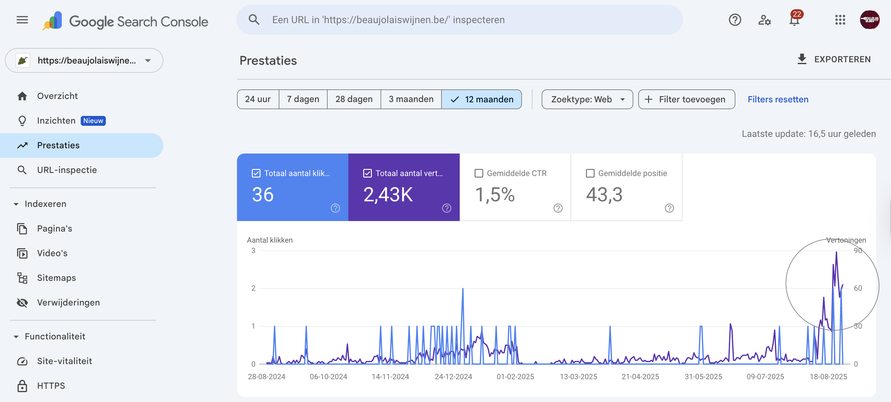

SEO teksten laten schrijven die Google begrijpt en jouw verhaal écht vertellen
Search Engine Optimisation (SEO) is tegenwoordig een onmisbaar onderdeel van vrijwel iedere online marketingstrategie. Toch blijkt het in de praktijk vaak lastig om naast alle dagelijkse werkzaamheden ook nog teksten te schrijven die een website écht goed vindbaar maken.
SEO gaat namelijk verder dan het verwerken van een paar zoekwoorden in een tekst. Achter sterke SEO content schuilt een doordachte strategie: van onderzoek naar zoekgedrag tot teksten die helder, prettig leesbaar en inhoudelijk waardevol zijn voor de mensen die ze vinden.
Daarom kiezen veel bedrijven ervoor om hun SEO teksten te laten schrijven. Als freelance SEO specialist help ik bedrijven bij het creëren van teksten die niet alleen goed gevonden worden in zoekmachines, maar die ook daadwerkelijk iets overbrengen. Teksten die passen bij de ziel van een bedrijf, vertrouwen opbouwen bij bezoekers en op een natuurlijke manier bijdragen aan de groei van een website.
Op deze pagina vertel ik je wat SEO teksten precies zijn, waarom ze zo waardevol zijn en hoe ik te werk ga bij het schrijven van SEO teksten voor jouw bedrijf.
Niet op zoek naar informatie, maar naar hulp bij de SEO van jouw website? Stuur mij dan vrijblijvend een berichtje via de onderstaande knop 'contact me'. Ik kijk ernaar uit om van je te horen!
Wat is het nut van SEO teksten?
Dat jij dit artikel leest, is misschien wel het mooiste bewijs waarom het slim is om SEO teksten te laten schrijven. Zoals je kunt zien, is mijn website niet die van een groot marketing bedrijf, dat dankzij een sterke online autoriteit en honderden pagina’s content bijna vanzelf bovenaan in Google verschijnt. Nee, je vond juist míjn website. En dat gebeurde dankzij een SEO-tekst waarin techniek en taal samenkomen.
Voor kleine en middelgrote bedrijven is SEO vaak geen luxe, maar een sleutel. Goede teksten zorgen ervoor dat jouw website hoger in Google verschijnt en jouw bedrijf gevonden wordt. Goede SEO teksten werken als een open raam: ze laten nieuwe bezoekers binnen en zorgen dat jij gezien wordt. Bovendien kunnen bezoekers, wanneer zij zich aangesproken voelen door jouw woorden, zomaar veranderen in klanten. Misschien ligt het succes van jouw onderneming dan ook niet in grootse reclamecampagnes, maar in een handvol sterke teksten die Google én je ideale klant weten te raken.
Waarom SEO teksten laten schrijven?
Wanneer je ervoor kiest om SEO teksten te laten schrijven, bespaar je jezelf in de eerste plaats een hoop tijd. Zowel de tijd die je nodig hebt om te leren hoe je een SEO tekst schrijft, als de tijd om deze daadwerkelijk op papier te zetten. En dan heb ik nog niet het zoekwoordenonderzoek benoemd, noch het puzzelen met structuur en het bedenken van een overkoepelende content strategie. Maar je krijgt ook iets anders: teksten die door een mens zijn geschreven, met aandacht en gevoel. AI kan veel, maar zoekmachines en lezers herkennen én preferen nog steeds authenticiteit.
Een ervaren SEO tekstschrijver weet daarnaast wat een tekst sterk en prettig maakt. Iemand met een passie voor taal en met het inzicht in SEO beschikt over de vaardigheid om schone taal en effectieve inhoud met elkaar te verenigen. Zoekwoorden worden hierbij geen stenen die de tekst verzwaren, maar juist bouwstenen voor verhalen die stevig staan én toch ook licht aanvoelen. In de volgende paragraaf vertel ik meer over wat een SEO tekst onderscheidt van een gewone tekst, en waarom juist dat verschil telt.
Het verschil tussen een gewone tekst en een SEO tekst
Om duidelijk te maken wat een goede SEO tekst is, laat ik je eerst graag het tegenovergestelde zien: een 'gewone' tekst, waarbij geen rekening is gehouden met zoekmachines. Een voorbeeld daarvan is mijn artikel getiteld Een bijzonder verblijf. In plaats van de SEO richtlijnen te volgen, schreef ik dit stuk vanuit mijn hart en herinneringen. Soms is het immers fijn om iets te creëren dat puur gevoelsmatig is, zonder daarbij rekening te houden met richtlijnen en regeltjes.
Voor de tekst Een bijzonder verblijf heb ik bijvoorbeeld geen zoekwoordenstrategie bedacht, noch een focuszoekwoord gebruikt dat zich herhaalt op strategische plekken. Denk hierbij aan de H1 titel, de eerste alinea en de meta-beschrijving. De tussenkopjes van de tekst bedacht ik daarnaast op gevoel, zonder oog voor zoekwoorden of een aantal tekens dat beter aansluit op hoe zoekmachines titels tonen. Een eenvoudige titel als 'Herstellen' zou in een SEO tekst bijvoorbeeld iets zijn als 'Herstellen in een bijzonder Amsterdams appartement'.
Ook qua woordenaantal en structuur voldoet de tekst niet aan SEO richtlijnen. De opbouw is literair en associatief, zonder korte alinea’s, scanbare lijstjes of tussenkopjes met zoekwoorden. Voor een menselijke lezer kan dat poëtisch en meeslepend voelen, maar Google begrijpt er weinig van. Voor de zoekmachine ontbreekt focus: waar gaat de tekst eigenlijk precies over?
Basisprincipes voor SEO-vriendelijke teksten
De voorbeeldtekst zal mijn website niet snel vindbaar maken in Google. Wil ik dat hij toch gezien wordt, dan zal ik hem moeten delen op sociale media of er reclame voor maken. Wil ik nou dat deze tekst alsnog beter gevonden kan worden op Google, dan zal ik hem moeten aanpassen opdat deze wel aan de SEO principes voldoet. Om je inzicht te geven in de betreffende principes, heb ik ze voor je op een rijtje gezet:
- Een duidelijk gekozen focuszoekwoord dat terugkomt in titels, koppen en door de tekst heen.
- Een scanbare opbouw met korte alinea’s, duidelijke tussenkopjes en eventueel lijstjes.
- Een logische structuur, met tussenkoppen, die Google helpt begrijpen waar de tekst over gaat.
- Een meta-title en meta-description die zowel zoekmachines als lezers aanspreken.
- Een balans tussen vindbaarheid en leesbaarheid: schrijven voor Google én voor mensen.
- Originaliteit en authenticiteit, zodat de tekst zich onderscheidt van concurrenten.
- Relevante interne en externe links die context en autoriteit toevoegen.
- Afbeeldingen en andere media met goede alt-teksten ter ondersteuning van de inhoud.
- Voldoende lengte en diepgang zodat de lezer écht een volledig antwoord krijgt.
Misschien vraag je jezelf na deze informatie wel af of spontaniteit, een meer literair of artistiek karakter en SEO wel samen kunnen gaan. Het antwoord is dat dit, met een aantal aanpassingen, absoluut mogelijk is. Zelf ben ik van mening dat een SEO tekst echt sterk wordt op het moment dat regels en authenticiteit worden verweven. Andersom geldt ook dat het een artistiekere tekst ten goede kan komen wanneer deze enige structuur en richting bevat. In het volgende hoofdstuk ga ik graag nog wat dieper in op hoe die balans bewaakt kan worden.
Authenticiteit en SEO richtlijnen samen door één deur

Hoe kan een SEO tekst, ondanks alle regels en structuren, toch authentiek, creatief of misschien zelfs een tikkeltje poëtisch blijven? Waar zoekmachines houden van kaders en patronen, daar verlangen de schrijver en de lezer doorgaans naar gevoel, verbeelding en echtheid. Wanneer de structuur en focus helder zijn, begint dan ook het spel waarbij we deze proberen te verweven met een tekst die ook echt lééft.
De realiteit is dat als we vindbaar willen zijn, we SEO moeten omarmen. Omdat het volgen van richtlijnen echter behoorlijk kan indruisen tegen onze oorspronkelijke visie, ontstaat er soms wrijving tussen techniek en gevoel. Het kan bijvoorbeeld onnatuurlijk aanvoelen wanneer een zoekwoord op een plek verschijnt waar jij het zelf niet had verwacht. Of je merkt dat de focus en structuur die SEO verlangt, botst met de toon of stijl van jouw bedrijf. Dan rijst de vraag: hoe zorg je er samen met de tekstschrijver voor dat de regels niet de overhand nemen, maar dat de tekst soepel blijft stromen en deze jouw merk echt weerspiegelt?
Zo behoud ik als SEO specialist balans tussen techniek en ziel
SEO geeft mij als tekstschrijver weliswaar kaders, maar de ziel van een tekst ontstaat daarbuiten. Vanwege SEO kies ik bijvoorbeeld voor zoekwoorden met een hoog zoekvolume en lage moeilijkheidsgraad. Het is immers wel belangrijk dat de opdrachtgever dankzij de gebruikte termen vindbaar wordt, anders kan ik de teksten net zo goed niet schrijven. Echter, om ervoor te zorgen dat de website ook z'n ziel behoudt, verweef ik deze zoekwoorden vervolgens in prettige teksten die, in tegenstelling tot te commercieel, menselijk en warm zijn. Of, zoals een opdrachtgever mijn stukje laatst noemde: 'smeuïg', haha!
Een vraag die ik tijdens het schrijven altijd in het achterhoofd houd, is wat een lezer dient te voelen en onthouden bij het lezen van de artikelen. Daarnaast houd ik mij ook aan een aantal richtlijnen. Om te beginnen hoeft een focuszoekwoord bijvoorbeeld niet te 'schreeuwen'; het mag natuurlijk opduiken in een zin waar het toch al logisch klinkt. Variaties en synoniemen van het hoofdzoekwoord kunnen helpen om de herhaling te verzachten en de tekst kleur te geven, zonder de kern te verliezen. Op deze manier blijft de lezer altijd voorop staan, terwijl Google op z'n eigen manier wordt bediend.
Ook de structuur hoeft geen harde grens te zijn. Ik zie het eerder als een raamwerk dat jouw verhaal draagt, zoals het skelet van een gebouw de ruimtes schept die wijzelf inrichten en kleur geven. Korte alinea’s en duidelijke koppen zorgen voor overzicht, maar daarbinnen is er alle ruimte voor beeld, emotie en verbeelding. Op die manier wordt SEO niet de vijand van creativiteit, maar helpt het om belangrijke informatie verder te dragen dan het zonder die structuur had gekund.
Het is dus niet zo dat literaire of kunstzinnige teksten per definitie ongeschikt zijn voor SEO. Het geheim zit hem erin dat we de bouwstenen van vindbaarheid omarmen, terwijl we ondertussen vrij blijven spelen met toon, ritme en beeld. Willen we gevonden worden, dan is SEO onvermijdelijk. Maar dit betekent gelukkig niet het einde van vrije expressie, slechts een aanpassing van strategie. SEO hoeft dan ook geen belemmering te zijn, maar kan juist een steunpilaar vormen.
Zou je graag SEO teksten laten schrijven en zoek je iemand die niet alleen zorgt dat deze vindbaar zijn, maar ook dat ze leven en inspireren? Dan help ik je met plezier verder. Klik hieronder op ‘contact me’ en stuur mij vrijblijvend een berichtje.
Hoe werkt SEO teksten laten schrijven in de praktijk?
Misschien voelt het best spannend om SEO teksten te laten schrijven. Kan een schrijver jouw verhaal namelijk wel echt vertolken en is deze ook daadwerkelijk specialist op het gebied van vindbaarheid? Ofwel, zal jouw investering ook echt iets opleveren? Om jou misschien wat rust te brengen bij deze belangrijke beslissing, bespreek ik in dit hoofdstuk de verschillende stappen van het schrijven van een SEO tekst. Op deze manier krijg jij inzicht in dit proces en ook hoe ik dit zou benaderen.
Stap 1: Kennismaking en Analyse van jouw site
Wanneer je mij in de arm neemt voor het schrijven van je teksten, analyseer ik eerst jouw website. Dit doe ik om te onderzoeken wat de toon en schrijfstijl is van al bestaande content, wat er wordt aangeboden en natuurlijk om te ontdekken waar jouw bedrijf precies voor staat. Wanneer de mogelijkheid er is, ga ik over dat laatste ook graag met jou in gesprek en stel ik je een aantal vragen. Op basis van het onderzoek schets ik de context en sfeer waar de nieuwe teksten bij moeten passen. Het is immers essentieel dat ze écht representeren waar jij als mens en ondernemer voor staat.
Stap 2: Zoekwoordenonderzoek
Zodra dit beeld helder is, volgt het zoekwoordenonderzoek. Welke nieuwe termen kunnen we inzetten om jouw website beter vindbaar te maken? Om zoekwoorden te vinden, gebruik ik graag tools als Mangools, SE Ranking of Semrush. Daarnaast biedt Google Search Console waardevolle inzichten in de zoektermen waarop jouw website nu al gevonden wordt. Soms zit daar een kansrijke term tussen die nog nauwelijks is belicht en waarvoor een nieuwe of sterkere tekst geschreven kan worden.
Stap 3: Strategisch kiezen van zoekwoorden
Met de zoekwoordenlijst op tafel, is het tijd voor de volgende stap: strategisch kiezen. Het doel is hierbij te kijken naar hoe groot de competitie en het zoekvolume van een term zijn. De voorkeur gaat uit naar zoekwoorden met weinig competitie en een groot volume, die ook nog eens goed passen binnen een bredere contentstrategie. Met dat laatste bedoel ik dat de verschillende teksten samen ook een samenhangend verhaal moeten vertellen over jouw bedrijf. Voor elk gekozen zoekwoord ontstaat zo een sterke tekst, en samen vormen ze een krachtig geheel.
Stap 4: Het bedenken van een logisch structuur
Zijn de zoekwoorden gekozen, dan volgt het bedenken van een logische structuur voor elke tekst. Deze structuur zorgt ervoor dat de inhoud prettig leest, relevant is en de lezer echt iets oplevert. Elke tussenkop dient ertoe een andere deelvraag te beantwoorden. Veel klanten schrijven van nature zonder tussenkoppen, maar juist voor zoekmachines én voor lezers maken ze het verschil: overzicht, rust en duidelijkheid.
Stap 5: Schrijven van de SEO tekst
Staat de structuur stevig als een huis, dan rest tot slot het invullen van iedere paragraaf met heldere, inspirerende en toegankelijke tekst. Wanneer je SEO teksten laat schrijven, hoort de schrijver regelmatig te checken of jij tevreden bent met de richting, toon en sfeer. Ik werk graag met Google Docs, waar de opdrachtgever af en toe kan meekijken en opmerkingen kan plaatsen over wat zij liever anders zien. Zo ontstaat stap voor stap een tekst die niet alleen goed vindbaar is, maar waarin jij je ook volledig herkent.
Stap 6: Interne en externe links in SEO teksten
Ik schreef net wel: 'tot slot rest het schrijven', maar eigenlijk zijn er nog een aantal kleine stappen die een SEO tekst echt compleet maken. Om te beginnen het toevoegen van interne en externe links. Interne links zorgen ervoor dat bezoekers eenvoudig kunnen doorklikken naar andere relevante pagina’s op je website, waardoor ze langer blijven en meer waarde ontdekken. Externe links naar betrouwbare bronnen geven juist extra autoriteit en laten zien dat jouw content goed onderbouwd is. Zo versterk je niet alleen de gebruikerservaring, maar ook je positie in zoekmachines. Laat ik jou bijvoorbeeld doorverwijzen naar Google’s eigen SEO starter guide.
Stap 7: Het toevoegen van afbeeldingen
Zoals je misschien hebt gemerkt tijdens het lezen van deze tekst, voegen afbeeldingen kleur en prettige kleine pauses toe. Het oog wilt immers ook wat! Daarnaast voegen afbeeldingen, wanneer deze slim worden gekozen, ook waarde toe aan de tekst. Misschien helpen ze de lezer om iets net wat beter te begrijpen. Voor SEO is het daarbij belangrijk dat elke afbeelding een relevante bestandsnaam en alt-tekst krijgt. Daarmee begrijpt Google de inhoud en wordt je pagina ook via Google Afbeeldingen vindbaar.
Stap 8: Het schrijven van een sterke metatitel en -omschrijving
Wanneer je op Google zoekt, zie je dat de resultaten altijd een titel en een kleine omschrijving hebben. Dit noemen we de metatitel en -omschrijving. Deze kleine tekstjes geven de zoeker een beeld van waar de pagina over gaat en bepalen of hij of zij erop zal klikken. Ze moeten daarom niet alleen je focuszoekwoord bevatten, maar ook nieuwsgierigheid wekken. Het is als het ware je digitale visitekaartje: kort, krachtig en uitnodigend.
Stap 9: Publiceren en verfijnen
Na een of meerdere edit rondes is de tekst af en kan deze online worden geplaatst. Na publicatie houd ik vervolgens in de gaten hoe de tekst presteert. SEO is namelijk geen eenmalige actie, maar een levend proces waarin we samen blijven leren en verfijnen. Soms vraagt een zoekwoord om een extra paragraaf, een nieuwe invalshoek of een link naar een ander artikel. Zo groeien jouw teksten mee met jouw bedrijf en met de vragen van jouw publiek.
Uiteindelijk is dat wat SEO zo krachtig maakt: elke tekst vormt een fundament, maar samen bouwen ze aan een huis waarin jouw verhaal zichtbaar en vindbaar wordt. En waar Google de bezoekers misschien door de voordeur binnenbrengt, zorg jij er met jouw eigenheid en aanbod voor dat ze zich welkom voelen en willen blijven.
Prijs van SEO teksten laten schrijven: investering in zichtbaarheid
De kosten voor het laten schrijven van SEO teksten verschillen enigszins per project en hangen af van factoren zoals de lengte van de tekst, het benodigde onderzoek en de gewenste mate van optimalisatie. Gelukkig zijn SEO teksten eigenlijk geen uitgave, maar een investering: een goede SEO tekst blijft doorgaans namelijk jarenlang nieuwe bezoekers en klanten aantrekken. Waar een advertentiecampagne stopt zodra je het budget pauzeert, blijft een sterke tekst werken zolang hij op de website staat.
Omdat elk project uniek is, werk ik meestal op basis van een uurtarief. Mocht dit prettiger zijn, kunnen we ook een vast bedrag per tekst afspreken. Hieronder geef ik je een overzicht van de prijzen per type tekst. Uiteraard is overleg altijd mogelijk! Ik hoor graag wat binnen jouw mogelijkheden ligt.
- Langer blog artikel van ca. 1000-1500 woorden: €240, exclusief btw (1,5 tot 2 dagen werk **)
- Een informatieve tekst van zo'n 800-1200 woorden over bijvoorbeeld een dienst of onderdeel van het bedrijf: €220, exclusief btw (1,5 dag werk **)
- SEO landingspagina: €200, exclusief btw (ongeveer 1 dag werk **)
- Een langere producttekst van ca. 500-800 woorden: €150, exclusief btw (ongeveer 4-7 uur werk **)
- Een reeks kortere productteksten van ca. 200 woorden per tekst: pakketprijs vanaf €200 voor 5 teksten, €350 voor 10 teksten en €600 voor 20 teksten, exclusief btw. (hoeveelheid uren afhankelijk van de hoeveelheid teksten **)
- Uitgebreid zoekwoordenonderzoek en een content strategie voor de hele site: tussen €200 en €300 (ongeveer 1,5 dag tot 2 dagen werk).
** Deze prijzen en het aantal uren zijn inclusief zoekwoordenonderzoek, structuur en het afstemmen van de tone-of-voice op jouw bedrijf.
Conclusie: SEO teksten laten schrijven die echt werken

Uiteindelijk draait SEO om zichtbaarheid die stap voor stap groeit. Het is geen eenmalige truc, maar een proces waarin techniek en taal elkaar versterken. Zo werk ik momenteel bijvoorbeeld met een makelaar én een wijnwebshop gespecialiseerd in Beaujolais wijnen. Daar zie ik hoe slechts een aantal aanpassingen en nieuwe SEO artikelen al de eerste bewegingen zichtbaar maken in hun online vindbaarheid. Het samenspel van strategie en authenticiteit zorgt hierbij voor een stevig fundament waarop hun verhalen vervolgens verder kunnen bloeien.
Wil jij ook SEO teksten laten schrijven die niet alleen Google bereiken, maar vooral jouw ideale lezer? Neem dan gerust contact met me op. Samen zorgen we voor teksten die vindbaar zijn én jouw verhaal met bezieling vertellen.
Kom je eerst nog graag wat meer te weten komt over wie ik ben als SEO specialist en wat mijn benadering van en ervaringen in SEO definieert? Lees dan mijn tekst Freelance SEO Specialist